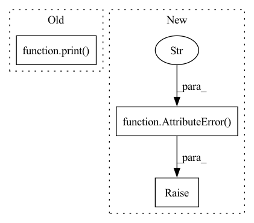

Pattern ID :35551
Before Change
try:
df = getattr(self, {self.DK_R: "_data", self.DK_I: "_infer", self.DK_L: "_learn"}[data_key])
except AttributeError:
print( "please set drop_raw = False if you want to use raw data")
raise
except:
raise
return dfAfter Change
def _get_df_by_key(self, data_key: str = DK_I) -> pd.DataFrame:
if data_key == self.DK_R and self.drop_raw:
raise AttributeError(
"DataHandlerLP has not attribute _data, please set drop_raw = False if you want to use raw data"
)
df = getattr(self, {self.DK_R: "_data", self.DK_I: "_infer", self.DK_L: "_learn"}[data_key])
return df
def fetch(In pattern: SUPERPATTERN
Frequency: 3
Non-data size: 3
Instances Fragment ID: 101425176
Project Name: microsoft/qlib
Commit Name: f6dd006c35139c6528c5507e2f60d7c3c7eaab72
Time: 2021-01-28
Author: bxd98@126.com
File Name: qlib/data/dataset/handler.py
M Class Name: DataHandlerLP
N Class Name: DataHandlerLP
M Method Name: _get_df_by_key(2)
N Method Name: _get_df_by_key(2)
M Parent Class: DataHandler
N Parent Class: DataHandler
M File Name: qlib/data/dataset/handler.py
N File Name: qlib/data/dataset/handler.py
M Start Line: 431
M End Line: 438
N Start Line: 431
N End Line: 435
Before Change
// set rnn state sizes according to calculated conv output size
next_h, next_w = self.img_h, self.img_w
enc_rnn_state_h, enc_rnn_state_w = [], []
print( next_h, next_w)
for n in range(self.num_layers):
next_h, next_w = conv_output_shape((next_h, next_w),
self.enc_conv_k[n], self.enc_conv_s[n], self.enc_conv_p[n])
enc_rnn_state_h.append(next_h)After Change
final_h, final_w = convtransp_output_shape((next_h, next_w),
self.dec_conv_k[-1], self.dec_conv_s[-1], self.dec_conv_p[-1])
if (self.img_h, self.img_w) != (final_h, final_w):
raise AttributeError(f"Model layer hyperparameters yield wrong output size: "
f"{(final_h, final_w)} (expected: {(self.img_h, self.img_w)})" )
enc_convs, enc_rnns, dec_convs, dec_rnns = self._build_encoder_decoder()
self.encoder = Encoder(enc_convs, enc_rnns).to(self.device)
self.forecaster = Forecaster(dec_convs, dec_rnns).to(self.device) Fragment ID: 101425171
Project Name: ais-bonn/vp-suite
Commit Name: a71498d763c84e72029c5921e390f8dff48fd61d
Time: 2022-02-11
Author: boltres@ais.uni-bonn.de
File Name: vp_suite/models/precipitation_nowcasting/ef_blocks.py
M Class Name: Encoder_Forecaster
N Class Name: Encoder_Forecaster
M Method Name: __init__(2)
N Method Name: __init__(2)
M Parent Class: VideoPredictionModel
N Parent Class: VideoPredictionModel
M File Name: vp_suite/models/precipitation_nowcasting/ef_blocks.py
N File Name: vp_suite/models/precipitation_nowcasting/ef_blocks.py
M Start Line: 137
M End Line: 165
N Start Line: 143
N End Line: 147
Before Change
options = parser.parse_args(sys.argv[1:5])
if options.version not in ["tf", "torch"] or options.model not in ["transformer", "seq2seq", "smn"]:
print( "actuator.py: error: VERSION: [tf/torch] MODEL: [transformer/seq2seq/smn]")
exit(0)
models[options.version][options.model]()
After Change
options = parser.parse_args().__dict__
if not options.get("pipeline"):
raise AttributeError("actuator.py: error: PIPELINE: [preprocess/train/valid/run]" )
Fragment ID: 101425175
Project Name: dengbocong/nlp-dialogue
Commit Name: 3cfbcecbe12d7f2151a6a6b67d9f28bb2d0b30b6
Time: 2021-06-23
Author: 1210212670@qq.com
File Name: actuator.py
M Class Name: AnonimousClass
N Class Name: AnonimousClass
M Method Name: main(0)
N Method Name: main(0)
M Parent Class:
N Parent Class:
M File Name: actuator.py
N File Name: actuator.py
M Start Line: 41
M End Line: 45
N Start Line: 49
N End Line: 52